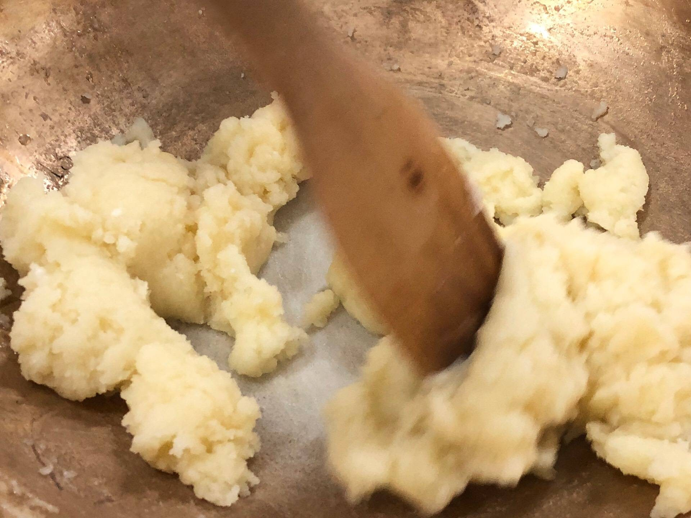
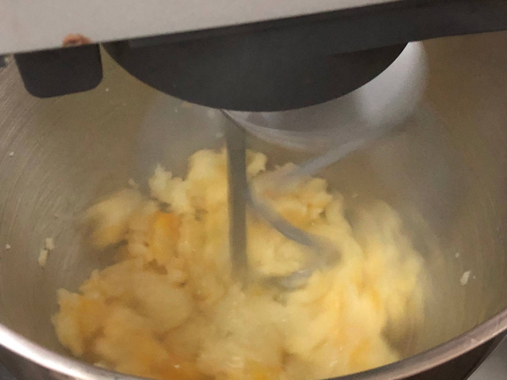
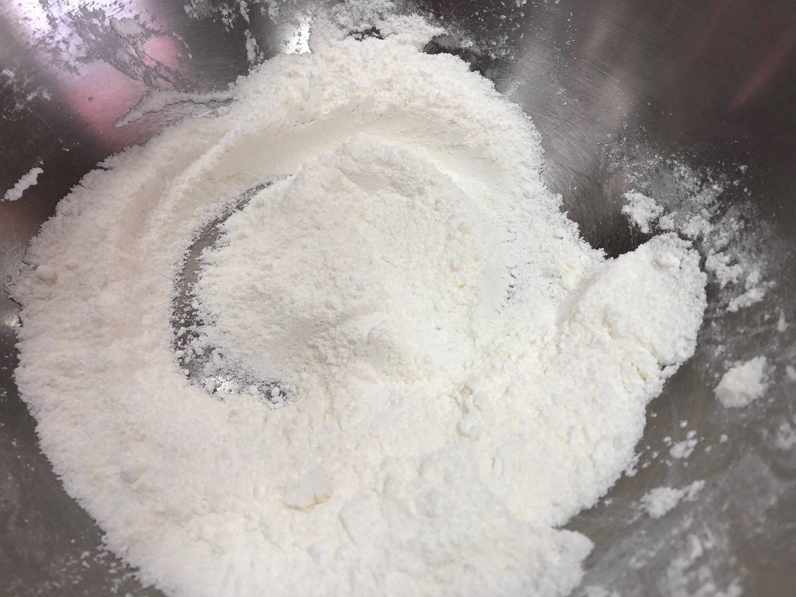
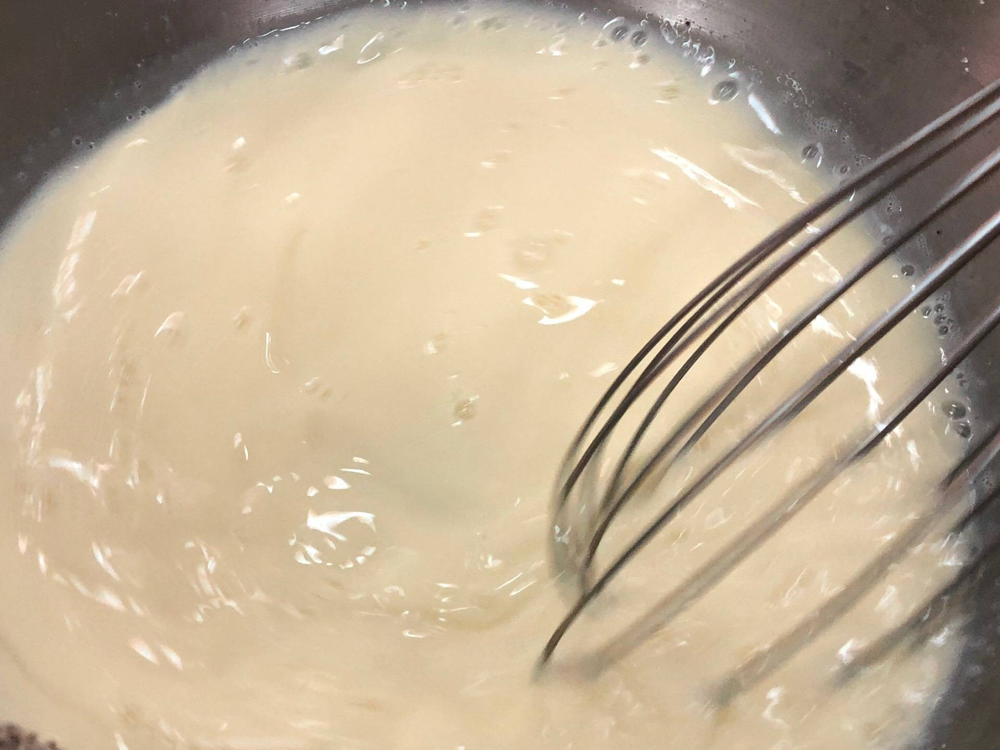
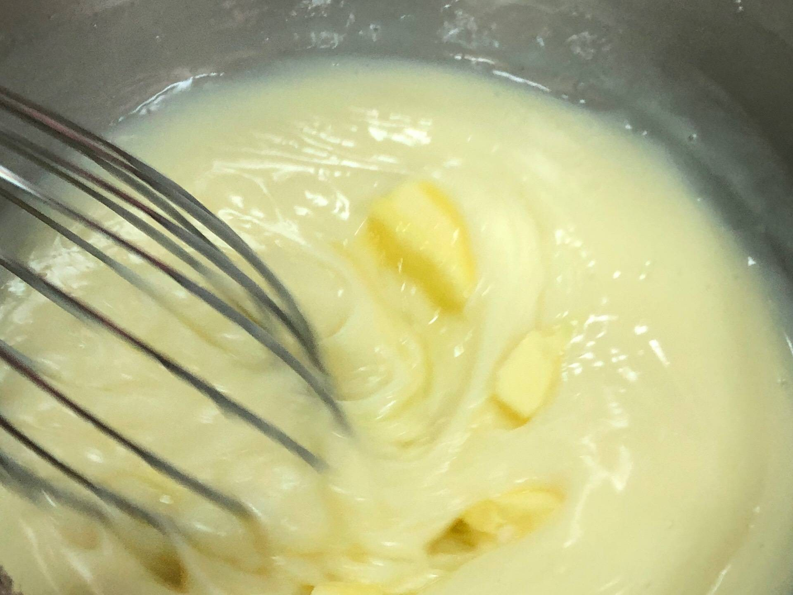

แบบฝึกหัดที่2 : Basic HTML
6440011034 : นางสาวอาภัสรา อินทร์ชู
Eclairs

ส่วนผสม
ส่วนผสมแป้ง
- แป้งสาลีร่อนแล้ว : 135 กรัม
- น้ำเปล่า : 240 กรัม
- เนยสดชนิดเค็ม : 115 กรัม
- ไข่ไก่ : 5 ฟอง
ส่วนผสมไส้ครีม
- นมสดพร่องมันเนย : 750 กรัม
- แป้งข้าวโพด : 75 กรัม
- ไข่ไก่ : 1 ฟอง
- นมผงขาดมันเนย : 25 กรัม
- น้ำตาลทราย :150 กรัม
- วนิลายี่ห้อnielsen•massey : 2 ช้อนชา
- เกลือ : 1/16 ช้อนชา
- เนยสด : 75 กรัม
ขั้นตอนการทำ
- ใส่น้ำและเนย ตั้งไฟพอเดือด ให้เนยละลาย

- ใส่แป้งทีเดียว คนเร็วๆจนแป้งร่อนเป็นก้อน ไม่ติดกระทะ ยกลงไปใส่ในเครื่องตี

- ค่อยๆใส่ไข่ลงไปทีละฟอง ไม่ต้องรอให้แป้งอุ่น ให้ไข่เข้ากันดีกับแป้ง จึงใส่ไข่ฟองที่ 2 ทำแบบนี้จนครบ 5 ฟอง

- ตักแป้งใส่ถุงบีบ ใช้หัวบีบรูปดาวหรือเม็ดมะยม บีบลงในถาดที่ทาเนยหรือใช้แผ่นรองอบ ระยะห่าง 3 ซม.

- นำเข้าเตาอบอุณหภูมิ 190 องศาเซลเซียส ประมาณ 20 นาที นำออกจากเตาแซะวางบนตะแกรงจนเย็น

- ผสมแป้งข้าวโพด นมผง เกลือ น้ำตาลทรายเข้าด้วยกัน

- ผสมนมสดกับไข่ให้เข้ากัน

- เทใส่ในแป้ง ผสมให้เข้ากัน

- ใส่หม้อต้มน้ำ นำภาชนะที่ใส่ส่วนผสมวางด้านบนผสมให้เข้ากันสักครู่ ตามด้วยเนยสด คนให้ละลายเป็นเนื้อเดียวกันพอข้น

- ใส่วนิลาลงไป คนเร็วๆให้เข้ากัน ยกลง

- บีบไส้เป็นขั้นตอนสุดท้าย ก่อนที่จะทาน ต้องรอให้ความชื้นจากไส้ได้ซึมเข้าไปสู่ตัวแป้งก่อน

คุณค่าทางโภชนาการ
| พลังงาน |
170 แคลอรี |
| น้ำตาล |
10 กรัม |
| ไขมัน |
9กรัม |
| โซเดียม |
140 มิลลิกรัม |
อ้างอิง
สูตรการทำขนมเอแคร์
รีวิวและโภชนาการ
Home